Fabiana (administradora) e operadores de caixa · branch fix/qa-25-11 (b05b67c) · 2026-11-27
Guia prático da loja
Como usar o sistema no dia a dia da loja: abrir o caixa, vender, receber mercadoria, lançar despesas, desfazer uma venda e fechar o caixa. As telas vêm do sistema em funcionamento, com dados de exemplo. Quem responde com este guia, pessoa ou IA, responde só com o que está escrito aqui; se faltar algo, fale com a equipe que desenvolveu o sistema.
Quem faz o quê
- Administradora (Fabiana): vê tudo. Só ela faz estornos, lança despesas, registra compras, cadastra fornecedores e vê o Dashboard.
- Operador de caixa: vê Nova venda, Histórico de vendas, Caixa, Produtos e Estoque. Abre o caixa, vende e fecha o caixa.
Cada pessoa entra com o próprio usuário e senha. O sistema registra quem abriu e fechou o caixa e quem fez cada estorno.
Antes de usar como controle principal: a equipe ainda precisa conferir com a Fabiana a contagem inicial do estoque, os relatórios reais do iFood e da 99Food e o leitor de código de barras da loja.
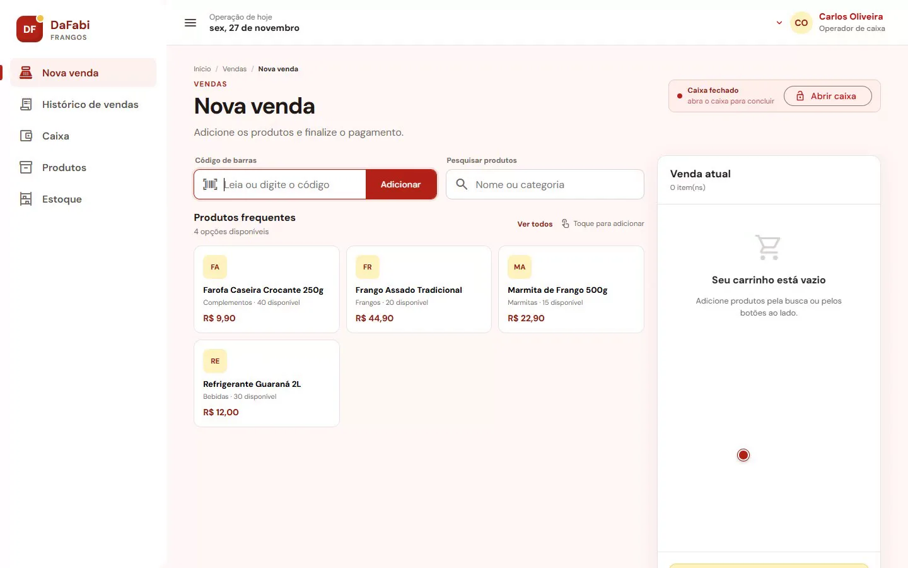
Fontes: Perfis e acessos do sistema; Regras de caixa, vendas, estorno e compras do sistema; Pendências antes de usar o sistema como controle principal; Gravação do sistema em funcionamento em 27/11/2026, com dados de exemplo
Abrir o caixa
Sem caixa aberto, nenhuma venda é concluída. O PDV mostra o aviso "Caixa fechado".
- Clique em Abrir caixa no aviso do PDV, ou vá em Caixa.
- Conte o dinheiro da gaveta e digite o total em Saldo inicial.
- Clique em Abrir caixa e confirme na janela.
O Resumo do caixa mostra o caixa aberto, com o seu nome e o horário.
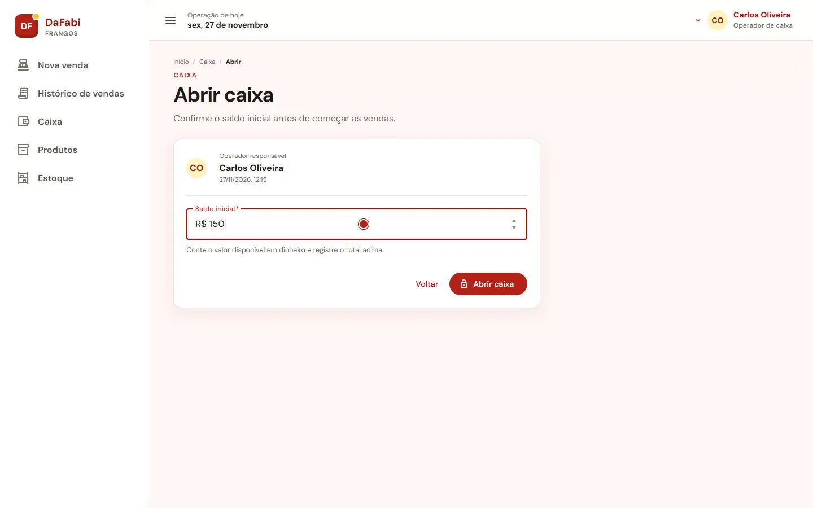
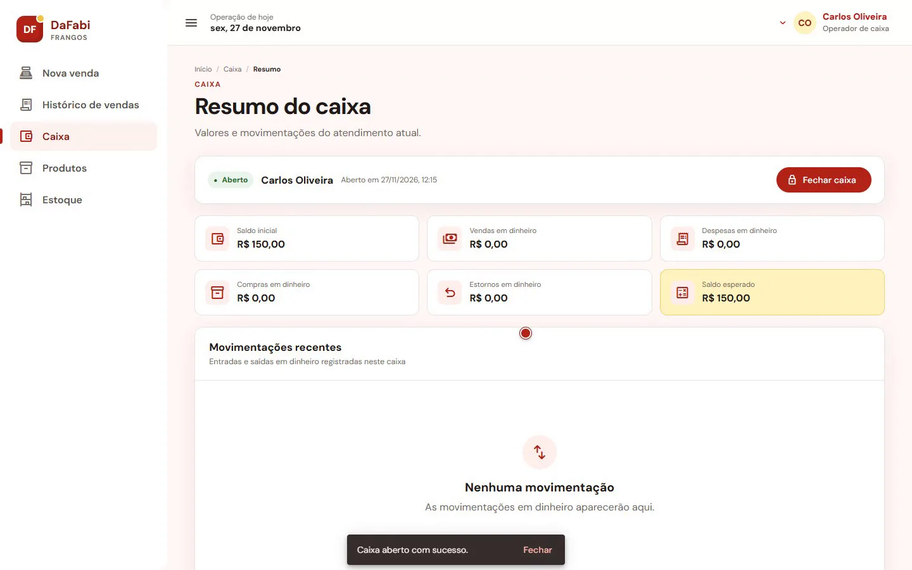
Fontes: Gravação do sistema em funcionamento em 27/11/2026, com dados de exemplo; Regras de caixa, vendas, estorno e compras do sistema
Vender no balcão
- Em Nova venda, passe o código de barras no leitor (ou digite e tecle Enter). Sem código, toque no produto em Produtos frequentes ou use Pesquisar produtos.
- Ajuste a quantidade com o + e o − no carrinho.
- Confira o Total da venda e clique em Continuar para pagamento (ou F2).
- Escolha Dinheiro, Pix, Débito ou Crédito.
- Em dinheiro, digite o valor recebido ou use Valor exato, R$ 100 ou R$ 200. O Troco aparece na tela.
- Clique em Confirmar pagamento e devolva o troco indicado.
A venda baixa o estoque na hora. Só o dinheiro entra no caixa físico; Pix e cartão não mudam o saldo da gaveta.
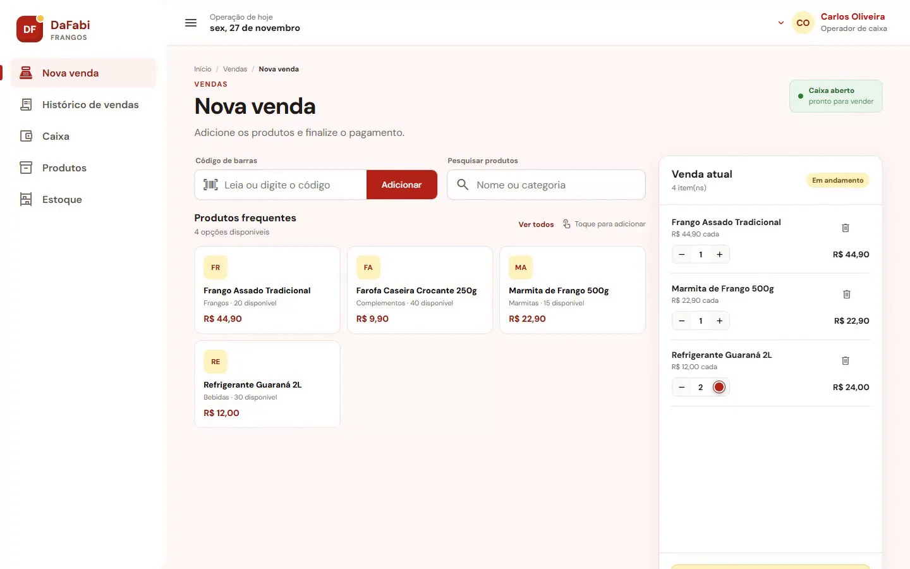
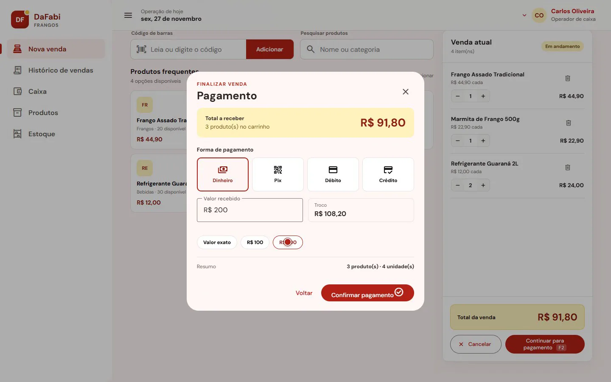
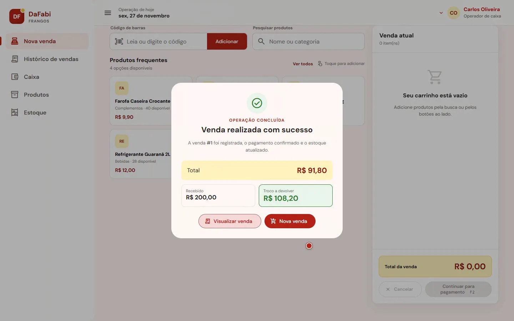
Fontes: Gravação do sistema em funcionamento em 27/11/2026, com dados de exemplo; Regras de caixa, vendas, estorno e compras do sistema
Receber mercadoria (compra)
Feito pela administradora quando a mercadoria chega.
- Em Compras, clique em Nova compra.
- Escolha o Fornecedor e confira a Data da compra.
- Escolha o Produto, digite a Quantidade e o Custo unitário.
- Para frango e outros perecíveis, digite o Lote recebido e a Validade da etiqueta.
- Use Adicionar item para outros produtos da mesma nota.
- Clique em Registrar compra.
O estoque já fica disponível. A compra aparece com pagamento Pendente: quando pagar, clique em Pagar e escolha a forma. Só pagamento em dinheiro sai do caixa.
Fornecedor novo? Cadastre antes em Fornecedores > Novo fornecedor.

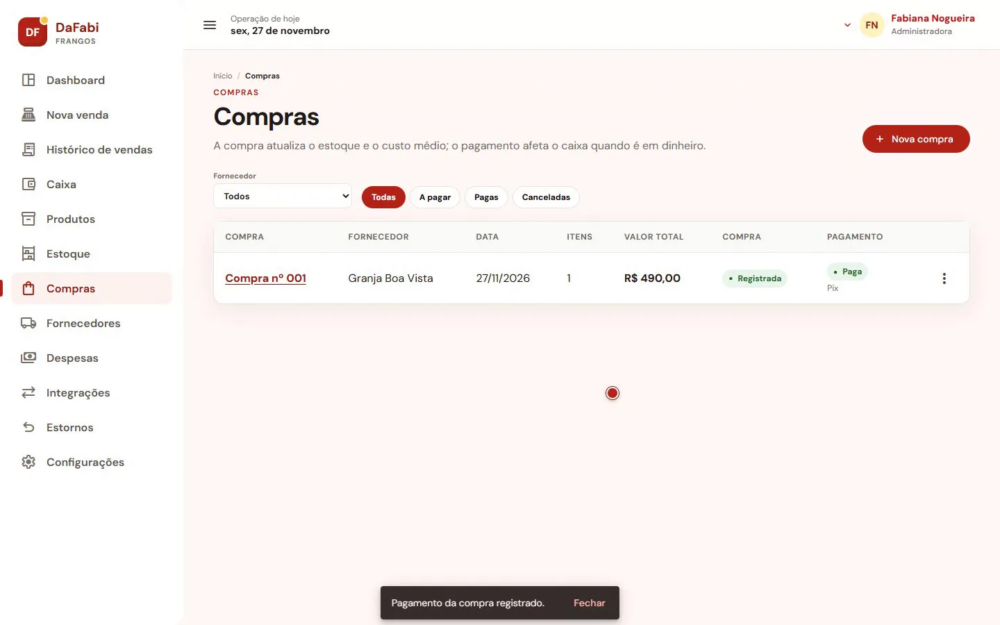
Fontes: Gravação do sistema em funcionamento em 27/11/2026, com dados de exemplo; Regras de caixa, vendas, estorno e compras do sistema
Conferir lotes e validade
Em Estoque, clique em Perecíveis para ver cada lote com a validade e a quantidade.
Se aparecer o aviso amarelo "produto perecível tem saldo sem lote", esse saldo não pode ser vendido. Conte o produto e use Vincular saldo para ligar o saldo a um lote.
Para corrigir uma quantidade que não bate com a prateleira, use Ajustar na linha do produto em Estoque: digite a quantidade real e o motivo.
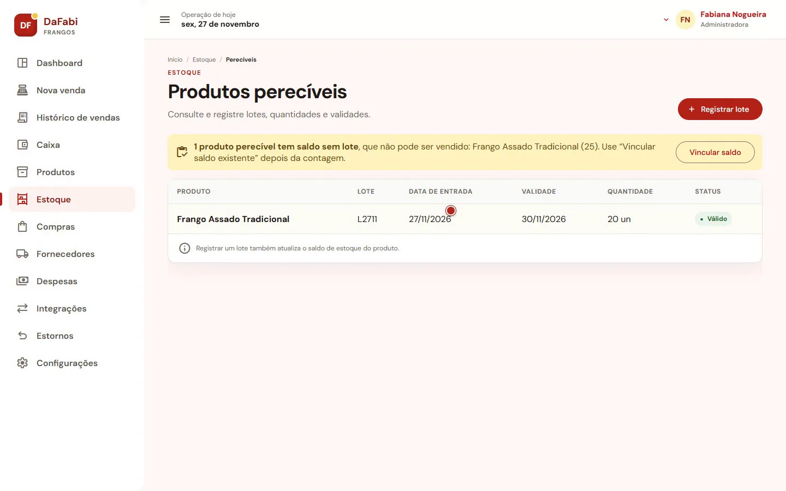
Fontes: Gravação do sistema em funcionamento em 27/11/2026, com dados de exemplo; Regras de caixa, vendas, estorno e compras do sistema
Lançar uma despesa
- Em Despesas, clique em Nova despesa.
- Preencha Descrição, Categoria, Valor, Data e Forma de pagamento.
- Clique em Registrar despesa. Ela fica Pendente.
- Quando pagar, clique em Marcar como paga e confirme.
Só a despesa paga entra no resultado. Se foi paga em dinheiro, ela também sai do caixa aberto, então marque como paga no mesmo dia em que tirou o dinheiro da gaveta.
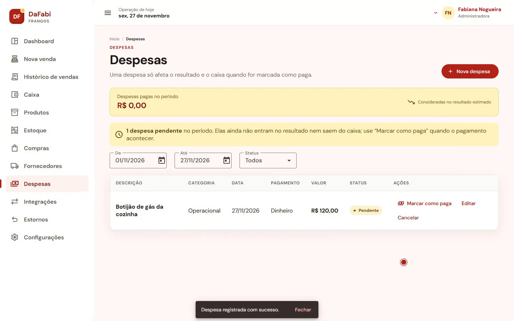

Fontes: Gravação do sistema em funcionamento em 27/11/2026, com dados de exemplo
Desfazer uma venda (estorno)
Só a administradora faz estorno.
- Em Estornos, clique em Novo estorno.
- Digite o Número da venda (está no Histórico de vendas) e clique em Buscar venda.
- Confira a data, o pagamento, o valor e os itens.
- Escreva o Motivo do estorno.
- Clique em Confirmar estorno e confirme na janela.
Os produtos voltam ao estoque. Se a venda foi em dinheiro, o mesmo valor sai do caixa: devolva ao cliente pela gaveta. Cada venda só pode ser estornada uma vez.
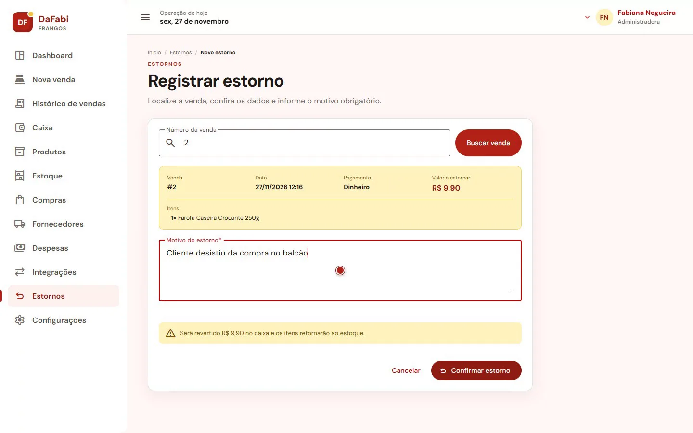
Fontes: Gravação do sistema em funcionamento em 27/11/2026, com dados de exemplo; Regras de caixa, vendas, estorno e compras do sistema
Fechar o caixa
- Em Caixa, confira o resumo e o Saldo esperado.
- Clique em Fechar caixa.
- Conte o dinheiro e digite o Valor contado.
- Se houver diferença, o sistema mostra o valor e pede a Justificativa da diferença. Escreva o motivo.
- Clique em Confirmar fechamento e em Fechar caixa na janela.
Depois de fechado, o caixa não aceita vendas até ser aberto de novo.

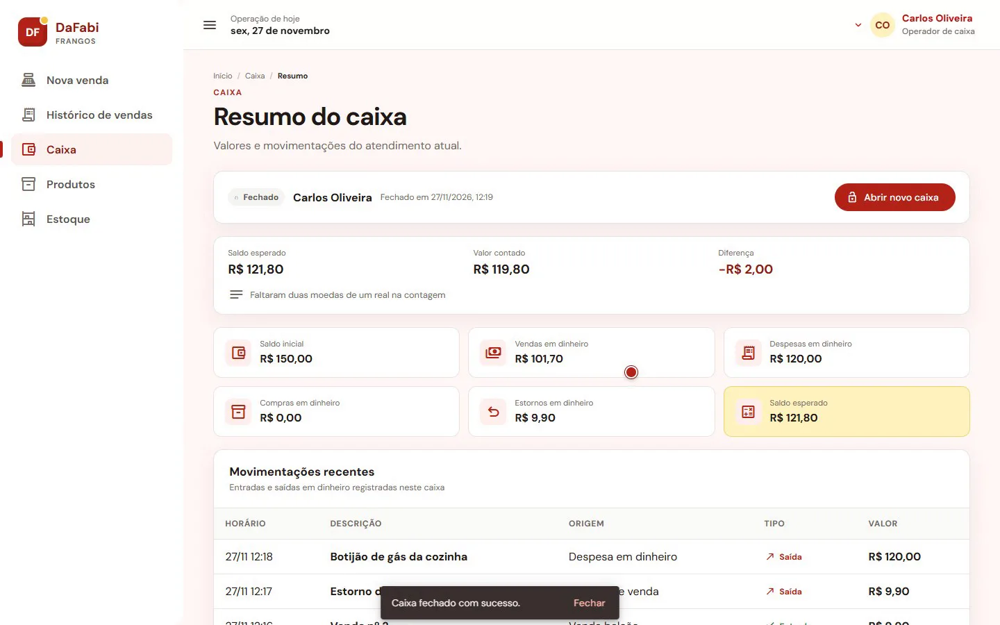
Fontes: Gravação do sistema em funcionamento em 27/11/2026, com dados de exemplo; Regras de caixa, vendas, estorno e compras do sistema
Importar vendas do iFood e da 99Food
- Baixe o relatório de pedidos no portal da plataforma.
- Em Integrações, clique em Abrir integração na plataforma.
- Selecione o arquivo e clique em Analisar relatório.
- Confira a prévia: pedidos lidos, cancelados, valores, taxas e linhas inválidas.
- Clique em Confirmar este arquivo.
Importar de novo o mesmo relatório não duplica os pedidos. A importação não mexe no caixa nem no estoque.

Fontes: Gravação do sistema em funcionamento em 27/11/2026, com dados de exemplo; Pendências antes de usar o sistema como controle principal
Ver o resultado do dia
O Dashboard mostra faturamento, despesas pagas, taxas do iFood e da 99Food, resultado estimado e quantidade de vendas. Troque o período em Hoje, Últimos 7 dias, Este mês ou Personalizado.
O resultado é uma estimativa. Quando há pedidos importados, o painel avisa que o custo das mercadorias desses pedidos ainda não está incluído.

Fontes: Gravação do sistema em funcionamento em 27/11/2026, com dados de exemplo; Regras de caixa, vendas, estorno e compras do sistema
Problemas comuns
- "Caixa fechado" no PDV logo depois de entrar, mas o caixa está aberto: recarregue a página (F5). É um defeito conhecido, já informado à equipe.
- "Sua sessão expirou" na tela de entrada: entre normalmente com seu usuário e senha.
- Produto perecível não aparece para venda: o saldo está sem lote ou o lote venceu. Veja Estoque > Perecíveis.
- Despesa não aparece no resultado: ela ainda está Pendente. Use Marcar como paga.
- "Acesso não permitido": essa área é só da administradora.
Fontes: Gravação do sistema em funcionamento em 27/11/2026, com dados de exemplo